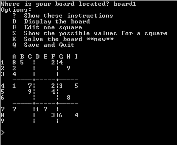
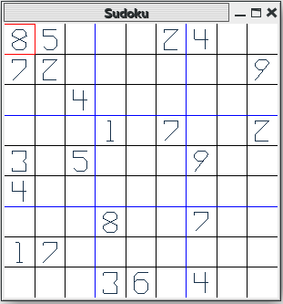

This was a small project. I wrote a command line version of the popular game sudoku for my CS124 class. This week I decided I would make a graphical version of the game using FreeGlut and OpenGL. Here is a screenshot of both games:


My graphical version of the game is very simple, only checking for invalid values (if the number inputted equals a number on the same row or column). My implementation of Sudoku can be found on my Git repository at the following link:
Sudoku download